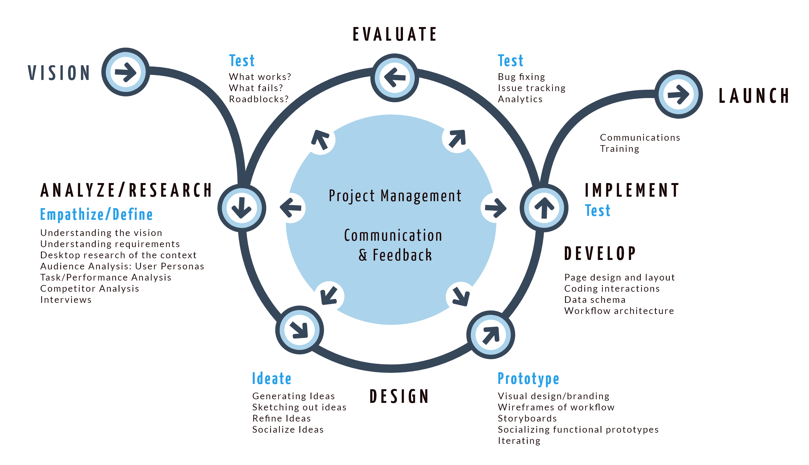
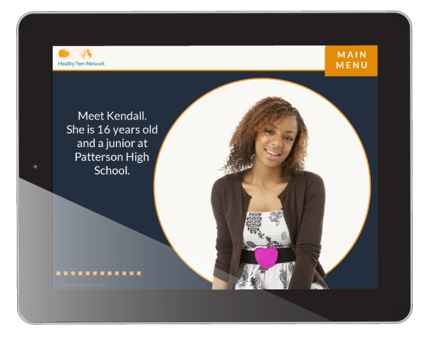

202.251.0009
202.251.0009
Margie Joyce
UI/UX and Instructional Designer
Washington, DC

With a Masters in Instructional Design and over 10 years of practical experience as a UI/UX designer, I'm excited to move into the next phase of my career. I'm interested in working with clients who are grappling to solve challenging problems in education, global health and gender equality. I work with software developers and international development subject matter experts to build web applications and online learning that can drive better decisions, improves processes and achieve more sustainable results. Learn more about me.
Current Work
USAID ACCELERATE Project: Think | BIG
Role: UI/UX Designer/Technical Project Manager
Since 2015, I have been working with a team that supports USAID program officers integrate behavior change thinking to improve the way they design and implement development programs. The primary focus was to reduce the number of mothers and children dying from preventable causes, such as malaria, pneumonia, inadequate nutrition, etc. The process has expanded to other sectors including education, democracy and governance, and economic growth. Our team used a human-centered design approach to build the web application and online tools to help USAID staff identify and analyze key behaviors and to track behavioral outcomes over time. I was responsible for managing the development of the tools as well as creating the user interface of the website. I also provided support creating learning and communication materials.
Participating with USAID global health participatns from DRC and Zambia during the SBC Regional Training in Accra, Ghana.
View examples of iterative design process
Please contact me for demo and references.
Partner URL: http://www.thinkbigonline.org
USAID URL: https://acceleratorbehaviors.org
International Refugee Committee (IRC):
Listen Up Platform for Action
Role: UI/UX Designer
When given the opportunity to work with a dynamic team of women from the IRC and Sonjara to elevate the voices of women and girls in refugee camps in Uganda, I jumped at the chance. I'm learning more about humanitarin assistance and in turn, I'm helping clarify thinking about the design process. In the first phase, I helped create the sytle guide and color palette and implement the user interface. In phase two, I'm working with the team to help clarify goals, create user personas, empathy maps, and testing the workflow.
Collaborating with Listen Up team in Entebbe, Uganda.
Please contact me for demo and references.
Development Site URL: http://listenup.sonjara.com
Design Process
As an instructional designer by training, I still like the ADDIE model as an overarching guide to help me organize and communicate my design work. My process is also informed by "design-thinking." The Neilson Group researched how practitioners view design thinking and their conclusion solidified my perspective that it is useful as part of a designer's toolkit to help tackle design challenges, but should not necessarily be a prescribed process. I find tidy process diagrams look good in pitches and proposals, but practiioners know from experience that you need to be flexible, adaptable and creative. Overall, I think good design always requires solid user research and testing with strong management and communication throughout. Success happens when you align user needs with the stakeholder's vision.
UI/UX & Project Management Examples
During my time with Sonjara, Inc., I led the design and development of several web applications. I worked with the lead software developer and our clients to create the user interface, migrate content and provide training in our custom Content Management System for a variety of sites:

Africa Biodiversity Collaborative Group
Role: Project manager, user requirements, content migration, visual design, user interface design, CMS training
Client: ABCG Consortium (African Wildlife Foundation, Conservation International, Jane Goodall Institute, WRI, Nature Connservancy, WWF, and WCS.)

Role: Worked collaboratively with UX researcher, software engineer; provided visual design, user interface design and CMS Training
Client: Alliance Française, Washington DC

Role: Worked collaboratively with communication strategist, software engineer, and information architect; provided project management, CMS training and user interface design.
Client: USAID in partnership with Integra Government Services Internationl and PwC

International Tax Policy Forum
Role: Project Manager, user requirements, content migration, visual design, user interface design, CMS training
Client: PwC
Role: Worked collaboratively with software engineer, provided user interface design, CMS training
Client: Tennis Central
Griot Financial Management Tool
Role: Worked with CEO, software engineer and graphic designer; gathered user requirements, oversaw visual design and implementation
Client: Sonjara
Low Cost e-Learning Modules
Using Articulate Storyline 360, I worked with clients to rapidly design and develop e-learning modules to meet an immediate need.
 Healthy Teen Network:
Healthy Teen Network:
The Teacher's Guide to Sex Education
Healthy Teen Network: Privacy and Confidentiality for Adolescents Accessing Sexual and Reproductive Health Care
JHPIEGO: Internal IT Training
My Skills
 WEB APPLICATION
WEB APPLICATION
DESIGN
HTML/CSS, high and low fidelity
prototyping, user interface
design, responsive design
TOOLS: Adobe XD, Fakoli CMS,
Adobe Dreamweaver, Fontello
 PROJECT
PROJECT
MANAGEMENT
Contract reviews, scopes of work,budgeting, burn rate projections, invoicing, task management, client relations
TOOLS: Word, Excel, Griot, Jira,
Box, Google Drive
 INSTRUCTIONAL
INSTRUCTIONAL
DESIGN
Working with subject matter experts, storyboarding, design consulting, e-learning development
TOOLS: Articulate Storyline 360,
Adobe Captivate
 COMMUNICATIONS/
COMMUNICATIONS/
KM SUPPORT
Schematics, presentation decks,
posters, one pagers, business cards, 508 compliance
TOOLS: PowerPoint, Adobe Illustrator, Adobe InDesign, Adobe Acrobat Pro